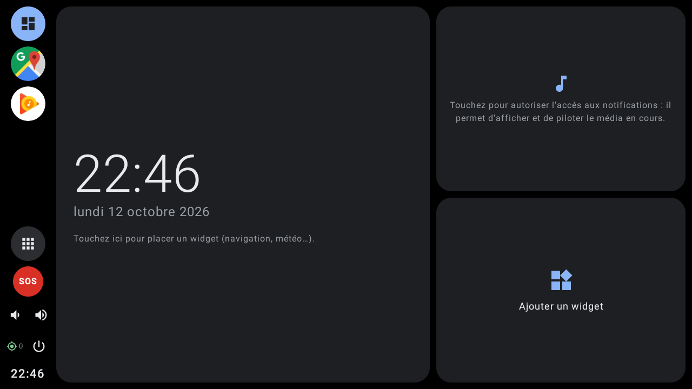
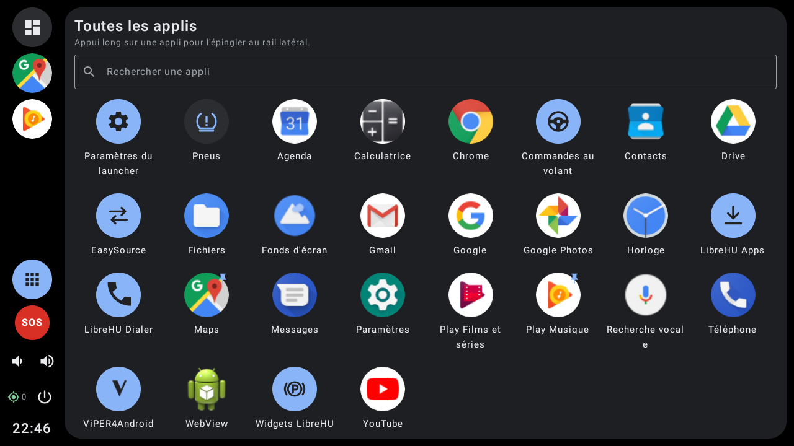
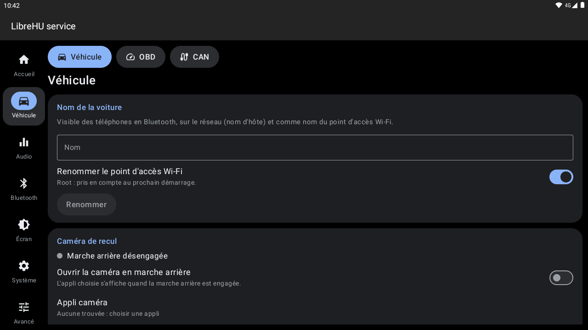

New software for your Android head unit
De nouveaux logiciels pour votre autoradio Android
LibreHU replaces the stock software of Jancar / Autochips AC8257 (UJC201) head units, piece by piece: a service that talks to the MCU, audio chip and CAN box, a car launcher, radio, phone, Android Auto, CarPlay, a phone app to set everything up, TWRP and a kernel built from source. All the source code is public on GitHub.
LibreHU remplace, morceau par morceau, les logiciels d'origine des autoradios Jancar / Autochips AC8257 (UJC201) : un service qui parle à la MCU, à la puce audio et au boîtier CAN, un launcher pensé pour la voiture, radio, téléphone, Android Auto, CarPlay, une appli téléphone pour tout régler, TWRP et un noyau recompilé. Tout le code source est public sur GitHub.



What is in it
Ce qu'il y a dedans
Each app is its own GitHub repository, built and signed by its CI. They share one signing key, one look (light / dark, accent colour, retro styles) and talk to each other.
Chaque appli a son dépôt GitHub, compilé et signé par sa CI. Elles partagent la même clé de signature, le même style (clair / sombre, couleur d'accent, styles rétro) et communiquent entre elles.
LibreHU service
Replaces Jancar's ivi-services: MCU (JAC_V1 profile), BD37534 audio chip, Hiworld CAN box, OBD (USB / Bluetooth), standby, touch panel, rear view camera with guide lines and parking radar, Bluetooth, kernel tweaks.
Remplace ivi-services de Jancar : MCU (profil JAC_V1), puce audio BD37534, boîtier CAN Hiworld, OBD (USB / Bluetooth), veille, dalle tactile, caméra de recul avec lignes de guidage et radars, Bluetooth, réglages du noyau.
LibreHU Launcher
Car dashboard home screen: widgets, now playing, Android Auto card, tyre pressure (USB TPMS), standby clock, lock screen, retro car-stereo styles with a segment display font and animated wallpapers (optionally on the GPU).
Écran d'accueil façon tableau de bord : widgets, lecture en cours, carte Android Auto, pression des pneus (TPMS USB), horloge de veille, écran de verrouillage, styles d'autoradio rétro avec police à segments et fonds animés (sur le GPU au choix).
LibreHU Bridge
Android and iPhone app: every setting of the head unit and of each LibreHU app, battery, OBD, GPS status, files, logs, reboot. End-to-end encrypted link over Wi-Fi or Bluetooth. Android Auto screen on Android.
Appli Android et iPhone : tous les réglages de l'autoradio et de chaque appli LibreHU, batterie, OBD, état du GPS, fichiers, journaux, redémarrage. Liaison chiffrée de bout en bout en Wi-Fi ou Bluetooth. Écran Android Auto sur Android.
Radio, Disc, ViPER4Android
Radio, Disc, ViPER4Android
FM radio on the MediaTek FM chip; audio CD, data discs and unprotected DVD video from a USB optical drive; ViPER4Android sound effects adapted to the head unit.
Radio FM sur la puce FM MediaTek ; CD audio, disques de données et DVD vidéo non protégés depuis un lecteur optique USB ; effets sonores ViPER4Android adaptés à l'autoradio.
Android Auto · CarPlay
Forks of Open Headunit (Android Auto) and xcertplay (CarPlay, with the unit's MFi chip) tied to the service and the launcher: steering wheel keys, day / night from the headlights, next turn on the dashboard.
Forks d'Open Headunit (Android Auto) et de xcertplay (CarPlay, avec la puce MFi de l'autoradio) reliés au service et au launcher : touches au volant, jour / nuit selon les phares, prochaine manœuvre sur le tableau de bord.
Phone, widgets, keys, sources
Téléphone, widgets, touches, sources
Bluetooth dialer, home screen widgets (warning lights, OBD, battery…), steering wheel key remapping (short and long press), source switcher for the MODE / SRC key.
Téléphone Bluetooth, widgets d'écran d'accueil (voyants, OBD, batterie…), commandes au volant réglables (appui court et long), sélecteur de sources pour la touche MODE / SRC.
LibreHU Apps
Installs and updates every app from GitHub, checks the SHA-256 and the signing key, works offline from a USB stick, flashes zips (TWRP, kernel, mods).
Installe et met à jour toutes les applis depuis GitHub, vérifie le SHA-256 et la clé de signature, fonctionne hors ligne depuis une clé USB, flashe les zips (TWRP, noyau, mods).
Custom kernel and TWRP
Noyau modifié et TWRP
A kernel rebuilt from the Autochips GPL sources (Linux 4.9.117) with root (KernelSU Next), CPU up to 2.3 GHz at boot (2.6 GHz possible), GPU 730 MHz, USB CD/DVD and Ethernet drivers, rebuilt camera and touch drivers, optional boot menu. TWRP recovery with steering wheel and CAN box keys.
Un noyau recompilé depuis les sources GPL d'Autochips (Linux 4.9.117) avec root (KernelSU Next), CPU jusqu'à 2,3 GHz au démarrage (2,6 GHz possibles), GPU à 730 MHz, pilotes CD/DVD et Ethernet USB, pilotes caméra et tactile reconstruits, menu de démarrage en option. Recovery TWRP avec les touches du volant et du boîtier CAN.
LibreHU Helper
Read-only diagnostic app that gathers everything needed to port LibreHU to another head unit, MCU or CAN box into one zip report.
Appli de diagnostic en lecture seule : rassemble dans un rapport zip tout ce qu'il faut pour porter LibreHU sur un autre autoradio, une autre MCU ou un autre boîtier CAN.
Download
Télécharger
Easiest: install LibreHU Apps only, it installs the others for your edition. Every link below is the latest build of its branch, signed with the LibreHU key.
Le plus simple : installer seulement LibreHU Apps, qui installe les autres pour votre édition. Chaque lien ci-dessous est la dernière build de sa branche, signée avec la clé LibreHU.
| App | Appli | What it does | Rôle | Download (APK) | Télécharger (APK) |
|---|---|---|---|---|---|
| LibreHU Apps | Installer and updater (start here)Installation et mises à jour (commencer ici) | ||||
| LibreHU service | MCU, audio, CAN, OBD, camera, standbyMCU, audio, CAN, OBD, caméra, veille | ||||
| LibreHU Launcher | Home screenÉcran d'accueil | ||||
| LibreHU FM | FM radio + widgetRadio FM + widget | ||||
| LibreHU Dialer | Bluetooth phoneTéléphone Bluetooth | ||||
| LibreHU Widgets | Warning lights, OBD, battery widgetsWidgets voyants, OBD, batterie | ||||
| LibreHU BtnRemap | Steering wheel keysCommandes au volant | ||||
| LibreHU EasySource | Source switcher (MODE / SRC key)Sélecteur de sources (touche MODE / SRC) | ||||
| LibreHU Disc | CD / DVD from a USB driveCD / DVD depuis un lecteur USB | ||||
| ViPER4Android LibreHU | Sound effectsEffets sonores | ||||
| Android Auto (Open Headunit LibreHU) | Android Auto receiverRécepteur Android Auto | ||||
| CarPlay (xcertplay LibreHU) | CarPlay receiver (MFi chip)Récepteur CarPlay (puce MFi) | ||||
| LibreHU Helper | Diagnostics for portingDiagnostic pour le portage | ||||
| LibreHU Bridge (phone)(téléphone) | Set up the head unit from your phoneRégler l'autoradio depuis le téléphone | ||||
| MCU Toolkit (legacy) | Old MCU diagnostic appAncienne appli de diagnostic MCU |
Editions. LibreHU service: with LibreHU service, which replaces Jancar's ivi-services (recommended). ivi: on the stock Jancar ROM, with ivi-services. generic: any Android 9+ device, without head unit integration. TWRP, kernel and mods: flashable zips (also listed in LibreHU Apps → Zips).
Éditions. LibreHU service : avec LibreHU service, qui remplace ivi-services de Jancar (recommandée). ivi : sur la ROM Jancar d'origine, avec ivi-services. générique : tout appareil Android 9 ou plus, sans intégration à l'autoradio. TWRP, noyau et mods : zips flashables (aussi dans LibreHU Apps → Zips).
Install
Installer
Nothing here changes the system partitions by itself: apps install like any APK, and anything written to boot or recovery is a step you choose, with a backup first.
Rien ici ne modifie les partitions système tout seul : les applis s'installent comme n'importe quel APK, et tout ce qui touche boot ou recovery est une étape que vous choisissez, avec sauvegarde avant.
- Check your unit. Settings → About should show an AC8257 board (
ac8257_demo). The displayed Android version is often fake: read the real one (API level) with AIDA64 or CPU-Z, see head units.Vérifier l'autoradio. Paramètres → À propos doit montrer une carte AC8257 (ac8257_demo). La version d'Android affichée est souvent fausse : lire la vraie (niveau d'API) avec AIDA64 ou CPU-Z, voir autoradios. - Install LibreHU Apps. Download its APK on a USB stick (or directly on the unit) and open it with a file manager. Allow installs from this source when Android asks.Installer LibreHU Apps. Télécharger son APK sur une clé USB (ou directement sur l'autoradio) et l'ouvrir avec un gestionnaire de fichiers. Autoriser l'installation depuis cette source quand Android le demande.
- Quick setup. At first launch, pick the edition (LibreHU service, ivi or generic) and, if the unit is rooted, allow silent installs. The apps of the edition are ticked: install them in one go.Configuration rapide. Au premier lancement, choisir l'édition (LibreHU service, ivi ou générique) et, si l'autoradio est rooté, autoriser les installations silencieuses. Les applis de l'édition sont cochées : les installer d'un coup.
- Set LibreHU Launcher as home and follow its setup assistant (permissions, Bluetooth, QR code to pair the phone app).Choisir LibreHU Launcher comme écran d'accueil et suivre son assistant (autorisations, Bluetooth, QR code pour associer l'appli téléphone).
- Optional: root, TWRP, kernel. From LibreHU Apps → Zips. Each zip backs up the current partition to
/sdcard/LibreHU/backupfirst. Read each zip's warning before flashing.En option : root, TWRP, noyau. Depuis LibreHU Apps → Zips. Chaque zip sauvegarde d'abord la partition actuelle dans/sdcard/LibreHU/backup. Lire l'avertissement de chaque zip avant de flasher.
Verified boot. LibreHU never disables dm-verity or rewrites vbmeta for you. If a change of yours needs it, that is a manual decision, made knowingly, on your own unit.
Démarrage vérifié. LibreHU ne désactive jamais dm-verity et ne réécrit jamais vbmeta à votre place. Si une modification de votre part l'exige, c'est une décision manuelle, prise en connaissance de cause, sur votre propre autoradio.
Compatibility
Compatibilité
Developed and tested on the Jancar UJC201 (Autochips AC8257, 4× Cortex-A53, PowerVR GE8300, real Android 9 shown as "12"), sold under several brands, in a Renault Clio 3 with a Hiworld CAN box. Installable is not the same as working: most features need this hardware.
Développé et testé sur le Jancar UJC201 (Autochips AC8257, 4× Cortex-A53, PowerVR GE8300, vrai Android 9 affiché « 12 »), vendu sous plusieurs marques, dans une Renault Clio 3 avec boîtier CAN Hiworld. Installable ne veut pas dire fonctionnel : la plupart des fonctions demandent ce matériel.
| App | Appli | Minimum Android | Android minimum | CPU architecture | Architecture | Needs | Demande |
|---|---|---|---|---|---|---|---|
| Launcher, Apps, Dialer, Widgets, BtnRemap, EasySource | 9 (API 28) | any | toutes | LibreHU service or ivi-services for car data (generic edition: none)LibreHU service ou ivi-services pour les données de la voiture (édition générique : rien) | |||
| ViPER4Android, CarPlay | 9 (API 28) | any | toutes | ViPER: root and its ViPERFX_RE audio module; CarPlay: the unit's MFi chip (or a CH341 adapter)ViPER : root et son module audio ViPERFX_RE ; CarPlay : la puce MFi de l'autoradio (ou un adaptateur CH341) | |||
| LibreHU service | 9 (API 28) | arm64 | AC8257 hardware (MCU, GPIO, audio chip), rootmatériel AC8257 (MCU, GPIO, puce audio), root | ||||
| LibreHU Disc | 9 (API 28) | arm64 | USB optical drive, rootlecteur optique USB, root | ||||
| LibreHU FM | 9 (API 28) | armv7 (runs on arm64)(tourne sur arm64) | MediaTek FM chip (/dev/fm)puce FM MediaTek (/dev/fm) | ||||
| LibreHU Helper | 9 (API 28) | arm64, armv7, x86, x86_64 | nothing (read-only)rien (lecture seule) | ||||
| Android Auto (Open Headunit) | 4.1 (API 16) | arm64, armv7, x86, x86_64 | — | ||||
| LibreHU Bridge (phone) | LibreHU Bridge (téléphone) | Android 8.0 · iOS 16 | any | toutes | iPhone: sideload the .ipa (AltStore, Sideloadly), Wi-Fi onlyiPhone : installer le .ipa soi-même (AltStore, Sideloadly), Wi-Fi seulement |
Other head unit? See the head unit list (chip, architecture, real and faked Android version) and run LibreHU Helper: its report is what porting needs.
Un autre autoradio ? Voir la liste des autoradios (puce, architecture, vraie et fausse version d'Android) et lancer LibreHU Helper : son rapport est ce qu'il faut pour un portage.
Roadmap
Feuille de route
Where the project is going. Dates are not promised: things ship when they work on the unit.
Où va le projet. Pas de dates promises : chaque pièce sort quand elle marche sur l'autoradio.
Apps and service
Applis et service
Every app above, replacing Jancar's ivi-services on the stock Android 9 ROM; settings from the phone.
Toutes les applis ci-dessus, à la place d'ivi-services de Jancar sur la ROM Android 9 d'origine ; réglages depuis le téléphone.
Custom kernel
Noyau modifié
Boots the stock ROM from boot at parity with the stock kernel (Wi-Fi, BT, GPS, FM, audio, touch, MCU, cameras). Still to test: standby, AHD camera, IR remote, fast reverse at boot. A variant with the connectivity drivers built in is in testing.
Démarre la ROM d'origine depuis boot à parité avec le noyau d'origine (Wi-Fi, BT, GPS, FM, audio, tactile, MCU, caméras). Reste à tester : veille, caméra AHD, télécommande IR, recul rapide au démarrage. Une variante avec les pilotes de connectivité intégrés est en test.
Kernel security updates
Mises à jour de sécurité du noyau
Catching up the official linux-stable fixes from 4.9.117 to 4.9.337 (the last 4.9 release, about 3,400 fixes touching code built for the unit), in 7 batches. All 7 applied and built (up to 4.9.337); batch 1 (4.9.150) validated on the unit, batch 7 (4.9.337) validated on the unit (USB, MCU, Bluetooth, Wi-Fi, hotspot, root, FM, video inputs, camera), batch 2 (4.9.200) boots, the others are to test.
Rattrapage des correctifs officiels linux-stable de 4.9.117 à 4.9.337 (dernière version 4.9, environ 3 400 correctifs touchant le code compilé pour l'autoradio), en 7 lots. Les 7 sont appliqués et compilés (jusqu'à 4.9.337) ; lot 1 (4.9.150) validé sur l'autoradio, lot 7 (4.9.337) validé sur l'autoradio (USB, MCU, Bluetooth, Wi-Fi, point d'accès, root, FM, entrées vidéo, caméra), lot 2 (4.9.200) démarre, les autres sont à tester.
LineageOS ROMs
ROM LineageOS
A real ROM, not a GSI: LineageOS 16.0 (Android 9) for the UJC201, with the LibreHU apps built in and precompiled, on the kernel above. Later LineageOS versions are planned once it runs. Proprietary vendor files are extracted from your own unit, never published.
Une vraie ROM, pas une GSI : LineageOS 16.0 (Android 9) pour l'UJC201, avec les applis LibreHU intégrées et précompilées, sur le noyau ci-dessus. Des versions plus récentes de LineageOS sont prévues une fois celle-ci fonctionnelle. Les fichiers vendor propriétaires sont extraits de votre propre autoradio, jamais publiés.
Other platforms
Autres plateformes
Once mature, LibreHU will be adapted to other head units. The groundwork is there: MCU protocols and car CAN decoding are JSON profiles, the generic edition runs on any Android 9+ device, and LibreHU Helper collects what a port needs. Porting notes · head unit chips.
Une fois mûr, LibreHU sera adapté à d'autres autoradios. Les bases sont là : les protocoles MCU et le décodage CAN des voitures sont des profils JSON, l'édition générique tourne sur tout appareil Android 9 ou plus, et LibreHU Helper rassemble ce qu'il faut pour un portage. Notes de portage · puces d'autoradios.
Join the LibreHU Discord
Rejoindre le Discord de LibreHU
The project's official server: help, tests on your unit, ideas, news.
Le serveur officiel du projet : aide, tests sur votre autoradio, idées, nouveautés.
membersmembres · onlineen ligne
Support the project
Soutenir le projet
LibreHU is built by volunteers in their free time, and every app stays free. If it is useful to you, a donation on Liberapay (a French non-profit, recurring donations) helps keep it going.
LibreHU est développé bénévolement, sur le temps libre, et toutes les applis restent gratuites. S'il vous est utile, un don sur Liberapay (association française à but non lucratif, dons récurrents) aide à le faire avancer.
FAQ
Is it a custom ROM?
Est-ce une ROM ?
Not a GSI and not a full ROM image: LibreHU replaces the software of the stock Android 9 ROM piece by piece (apps, service, recovery, kernel), each one installable and removable on its own.
Ni une GSI ni une image de ROM complète : LibreHU remplace les logiciels de la ROM Android 9 d'origine morceau par morceau (applis, service, recovery, noyau), chacun installable et désinstallable séparément.
Android refuses to update an app: why?
Android refuse de mettre à jour une appli : pourquoi ?
Android only updates an app signed with the same key. All LibreHU apps share one public key; an old build signed with another key (the phone app's debug builds before October 2026) has to be uninstalled once.
Android ne met à jour qu'une appli signée avec la même clé. Toutes les applis LibreHU partagent une même clé publique ; une ancienne build signée avec une autre clé (builds debug de l'appli téléphone d'avant octobre 2026) doit être désinstallée une fois.
My unit says Android 12 / 13. Will it work?
Mon autoradio affiche Android 12 / 13. Est-ce que ça marchera ?
Probably a fake number: manufacturers change the displayed version, not the API level. The apps need real Android 9 (API 28) or later; check with AIDA64 or CPU-Z and see the head unit list.
Probablement un faux numéro : les fabricants changent la version affichée, pas le niveau d'API. Les applis demandent un vrai Android 9 (API 28) ou plus ; vérifier avec AIDA64 ou CPU-Z et voir la liste des autoradios.
Is the iPhone app on the App Store?
L'appli iPhone est-elle sur l'App Store ?
No. The CI publishes an unsigned .ipa that you sign yourself with AltStore or Sideloadly (every 7 days with a free Apple ID). It works over Wi-Fi only: iOS reserves Bluetooth serial links to MFi accessories.
Non. La CI publie un .ipa non signé à signer soi-même avec AltStore ou Sideloadly (tous les 7 jours avec un identifiant Apple gratuit). Il marche en Wi-Fi seulement : iOS réserve les liaisons série Bluetooth aux accessoires MFi.